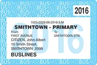
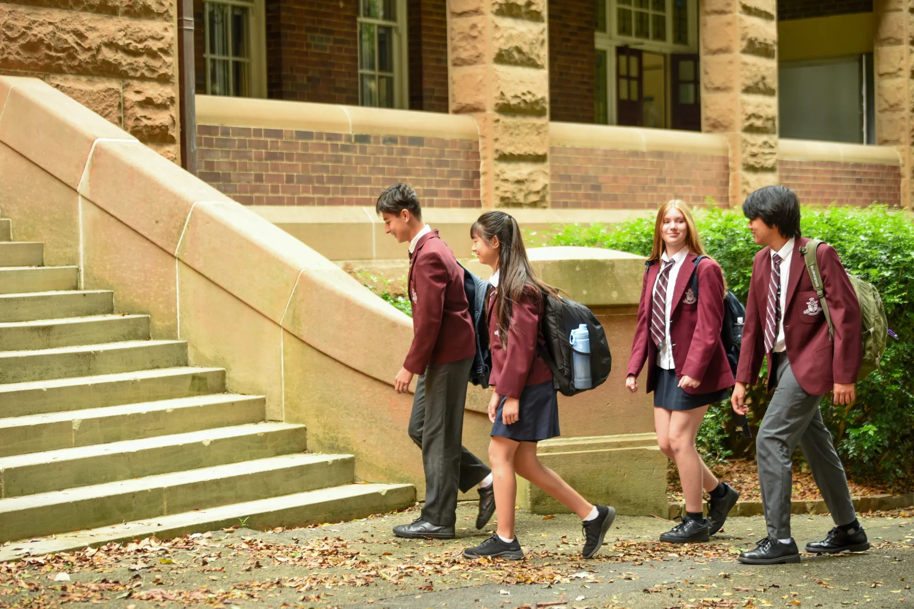

Travel to school
Planning your school travel is easy. There are a range of safe transport options to get to our school. Check our location map, driving details and public transport options to help make the journey to school safe and easy.
Fort Street High School is located in the heart of Sydney's Inner West in the suburb of Petersham, 20 minutes west of the CBD, and close to Sydney University and the University of Technology.
Our central location, and being situated close to Petersham Station and Parramatta Road, means that we are well served by public transport.
Location map
We are located at 620 PARRAMATTA ROAD, NSW 2049 PETERSHAM.
Use School Finder to confirm if you live in our local intake area.
Getting to and from school safely
As a parent or carer, it’s your responsibility to get your child to and from school safely. Student safety is our priority. Keep our school community safe by: driving and parking safely, even if it means parking further away and walking the rest of the way to school being a good role model never calling your child from across the road using the safest place to cross the road.
For independent travellers
Talk safe travel with your high-school-aged child including:walking to school safelystarting high school safelypublic transport safety7 reasons to actively travel to and from schoolwearing a helmetskateboarding safely.
Subsidised school travel
Transport for NSW (opens in new window) provides subsidies to assist school students. The School Student Transport Scheme (opens in new window) provides eligible students with free or subsidised travel on public transport between home and school .The School Drive Subsidy (opens in new window) may help towards the costs of driving children to school if you live in an area where there is no public transport.
School Student Travel
(This information was correct as of October 2024)
Students may be eligible for free or subsidised travel to and from school under the School Student Transport Scheme (SSTS).
The scheme includes:
- Free travel to and from home and school on approved metro, train, bus, ferry and light rail services during school term.
- Discounted travel on buses between home and school with a School Term Bus Pass (opens in new window) https://transportnsw.info/school-term-bus-pass (opens in new window)
- Subsidised Travel to and from school in private vehicles in areas where there is no public transport available
- Students with a disability who are unable to travel to and from school under the School Student Transport Scheme may be eligible for assistance under the Department of Education Assisted School Travel Program. Find out more on the Department of Education website https://education.nsw.gov.au/public-schools/astp
What will my free school travel pass look like?
Depending on where they are travelling, students may receive a free school travel pass, School Opal card or both.
Free school travel passes and School Term Bus Passes are issued by operators to students travelling on buses outside the Opal network. Some operators in rural and regional areas may choose not to issue passes to students.

School Opal cards are issued for free school travel and for School Term Bus Passes by Transport for NSW for travel on metro, train, bus, ferry and light rail trips in the Opal network.
Secondary school students from Years 7-12 are eligible if:
- They are a resident of NSW or an overseas student who is eligible for free government education,
- The straight line distance from their home address to school is more than 2 km, or
- The walking distance from home to school is 2.9 km or further.
If you don’t qualify for free school travel, you may be able to buy a School Term Bus Pass.
A School Term Bus Pass offers discounted travel on buses between home and school for the whole school term. A School Term Bus Pass is valid for travel between home and school on school days only, via the most direct route. It is only valid for one bus operator. Students who have been rejected for other reasons other than the radial or walking distance cannot apply for a School Term Bus Pass. They will need to apply for a Child/Youth Opal card (opens in new window)
Apply online for all school travel passes
You must apply online for all school travel passes, using a single application form for your complete journey. This can be done online at https://transportnsw.info/school-travel-apply (opens in new window)
School Endorsement
After you have submitted your application, the school will check the details you have entered match those they have on record and will endorse it.
Processing Your Application
Transport for NSW will then process your application. The application process may take several weeks and you will be informed of the outcome of your application by email. If your application is successful for travel inside the Opal network, a School Opal card will be sent to your nominated address.
Using Your School Travel Pass
School travel passes can only be used for approved travel on school days between the student’s home and school between 6.30am and 7pm. Student must comply with the Student Codes of Conduct (opens in new window) .
Plan Your Trip to School https://transportnsw.info/trip#/trip or phone 131 500 (opens in new window)
Bus routes
Board or Alight
412
Campsie to City Martin Place via Earlwood
Petersham Station
413
Campsie to Central Pitt Street
Parramatta Road
440
Bondi Junction to Rozelle
Parramatta Road
461X
Burwood to City Domain (Express Service)
Parramatta Road
480
Strathfield to Central Pitt St via Homebush Road
Parramatta Road
483
Strathfield to Central Pitt St via South Strathfield
Parramatta Road
504
Chiswick to Central Pitt Street
Norton Street
438X
Abbotsford to City Martin Place (Express Service)
Norton Street
445
Campsie to Balmain via Market Place Leichhardt
Norton and Crystal Streets
School Special
Bus routes
Board or Alight
682s
Leichhardt/Balmain
Fort Street High School to Gladstone Park Balmain680
School Excursions on the Opal network – Child /Youth Opal card required
For school excursions when students are required to travel on the Opal network they must have and use their own Child/Youth Opal card. Parents/Guardians should ensure there are sufficient funds on their child’s card to cover the excursion travel expenses. Students aged 16 years and older must carry their NSW/ACT Senior Secondary Student concession card. These are issued by the school as proof of concession entitlement.
Further Information
Timetable/General Information 131 500 https://apps.transport.nsw.gov.au/ssts (opens in new window)
Lost Property https://transportnsw.info/contact-us/lost-property#/ (opens in new window)
Apply for a travel pass
Eligible students can get a free travel pass under the School Student Transport Scheme. Apply for a travel pass today.

Driving and parking
The start and end of the school day are busy times for pedestrians and drivers outside schools.
When driving and parking near our school, please:
- ensure you park safely in school zones
- follow speed signs
- do not make U-turns or 3-point turns outside the school.
Parking on school grounds
There is no parking available on school grounds.
Need help getting to school?
If your child has a disability or additional needs, they may be eligible for the Assisted School Travel Program. Contact us to learn more or get help planning your child's journey to school.
- Bell times Learn about our start and finish times, breaks and activities. east
- Additional learning support Find out how we support students with disability or additional learning needs. east